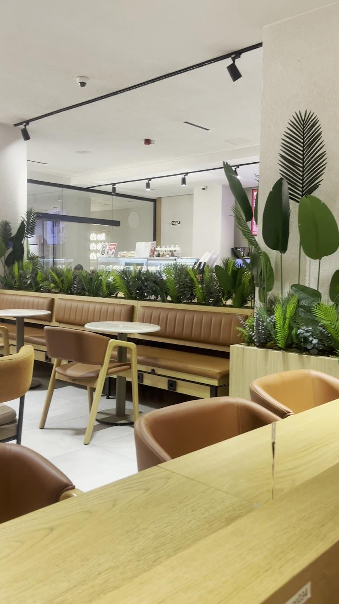

Kahve molası
Günün kahveleri için barımıza danışın.
MALL OF İSTANBUL KARŞISI
Kahvenize zaman ayırın.
Günün temposuna Venor’da bir ara verin.

VENOR’DA BİR MASA
Açık tonlar, ahşap masalar ve yeşil ayrıntılar. İster kısa bir kahve molası, ister uzayan bir sohbet için yerleşin.
Mall of İstanbul karşısında,
Aşık Veysel Caddesi’nde buluşalım.
AYRINTILARA BAKIN
Her buluşmanın kendine ait bir köşesi olsun.
Venor’a yol tarifi ↗GOOGLE YORUMLARI
“Ortam çok kaliteli tatlıları ve içecekleri taze ve çok güzel.”
Furkan
Google yorumunu aç ↗“Tek kelime ile harika lezzetine zaten yorum yok sürekli gittiğimiz bir yer zaten ve öneriyoruz da herkese”
Nazlı elçi
Google yorumunu aç ↗Google yorumlarından kısa alıntılar. Puan ve yorum sayısı kontrol tarihindeki kaydı yansıtır.
MOLANIN ADRESİ
08.00–02.00
@venorcoffee ↗